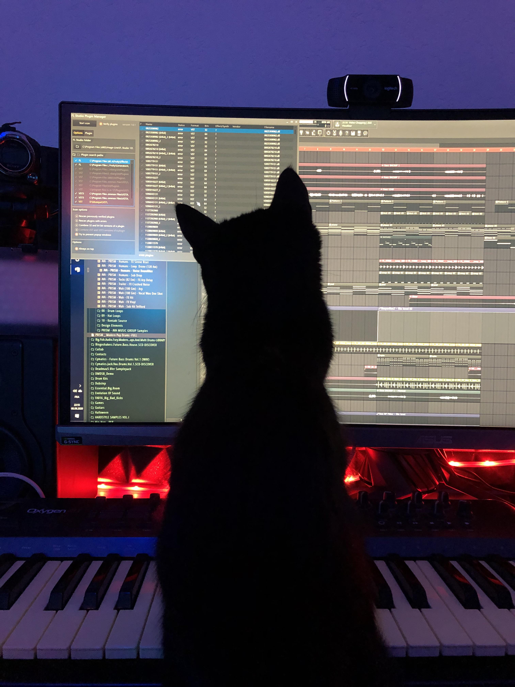

welcome to my blog #blog
#3 - 04/02/2026 - fl studio on linux is a fundamental waste of your time
fair warning: this is quite a rambly post
so recently i finally bit the bullet and bought a new computer! it cost me way more than i'm willing to admit so to ease the pain i enlisted my fine boyfriend to do everything else for me that did not involve money re: setting it up, installing os etc. it's purdy good but nothin too fancy, just enough to tide me over for the next five to six (to seven) years of music prod and occasional gaming.
as this is my first new puter in six years, i felt it to be a good time to try out linux! i've always been lightly interested in trying it, but as i have about 500gb of projects (including music, art, other stuff all of which requiring unique software for each thing, inevitable hours of set-up etc) i never bothered to wipe my windows install on my old pc in favour of linux simply because i couldn't be bothered to set everything up again when i knew i was getting a new computer soon anyway.
but, now the time has come, and i have had the computer with linux mint for a few weeks now! and i can very confidently say one thing:
trying to get fl studio to work properly on linux (if you have old projects you're porting over) is a fundamental waste of your time!!!
do not bother! it is not worth the effort! here, i shall list out all of the issues i (well, largely my boyfriend teehee) had with trying to get it to work... and the solution!
spoiler: dual boot windows lol
problem 1: fl studio is windows/mac only
i mean yeah, you can get it to run through wine, but then you already have some issues. the first thing i experienced when we finally got fl to boot was laggy ui, especially the volume meters. with some more fucking around we discovered that we should've installed it through bottles and not faugus which i will not pretend to understand why but whatever.
following this it seemed a little smoother! however, as i began playing around, another issue immediately reared its ugly head...
problem 2: audio drivers
alongside madkitty!! stuff, i also write a lot of music under Raingardens, which requires running my guitars into my audio interface either DI'd or mic'd. i have a focusrite 18i8, which works great in linux out of the box for hearing audio, but not so great as a conduit for input devices.
to get the guitar input measured in fl studio, you'd need the focusrite drivers! unfortunately, the focusrite drivers are windows only. surely it must be a simple process to get the drivers working in fl studio using something like bottles, right?
i mean, maybe? idk i didn't do it myself (thank you boyfriend ♡ (he says i provided emotional support)) but from my understanding it was not really a straightforward process.
my knowledge of this goes as follows: the audio drivers (ASIO) need to communicate with both fl studio and the interface, which usually is a one-step process either way in windows (fl studio -> driver -> audio that u can hear OR input audio u want to record -> driver -> fl studio) but linux doesn't have this functionality.
so, you need to bridge the drivers both ways to make it work. you need to make the drivers exist in their own little linux-suitable fake-ASIO driver that can talk with fl, and then the output has to be run through some other bridging process to actually be heard.
and, in the end, there was noticable input lag when playing guitar :( apparently there were ways to fix this but i never really got around to it, as i got bogged down on a much more annoying problem that eventually pushed me to a dual boot...
problem 3 (the kicker): vsts
i use vsts a lot! i make music; vsts are basically the thing that keeps that going. over the years i've accrued a large selection of vsts, both free and paid, that i use regularly in my workflow. from my old pc, i had very carefully extracted all of the vsts from their little folders alongside all of their respective bits and bobs to make getting the vsts to work with linux as easy as possible.
upon giving up dealing with the input lag (see problem 2) i decided to import all of my vsts. annoyingly, only half of them seemed to work! no good! i discovered a consistent issue with the broken vsts were that they were 32 bit.
now, fl studio can deal with 32 bit plugins as it has its own internal wrapper that makes it work without needing to bridge (i know that in ableton you need to use stuff like jbridge to get 32 bit plugins to work (i'm like 50% confident on this fact)).
this is very useful as i can basically use whatever plugin i want without issue when i'm on windows! however, many of the plugins i use regularly are 32 bit, and linux did NOT like the 32 bit vsts.
basically, the vsts would crash fl studio whenever they could. this is really unhelpful when you are trying to make music! and thus, i sought out solutions.
i tried a few workarounds, including editing registry entries of each individual vst to wrap it in its own little special bottles thing or whatever (i'm not going to pretend to understand it). this allowed me to add in vsts into new projects, but still crashed spectacularly on older projects that were ported from windows.
atop that, many of my vsts were simply just broken. linux did not like them, or i maybe missed some files when trying to port it over, or whatever. it didn't matter, for they did not work at all. i realised that i was going to need to download all of the installers for each vst, run them individually in bottles, specify where the new installs would go, etc.
can't be bovvereddddddddddd
so, i gave up! i realised it was going to be way more effort than it was worth to get anything working properly, and i resigned myself to needing to dualboot. i was really hoping not to but it had to be done.
epilogue
i've had fl studio on a windows dualboot for about a day or two now, and by god it's so easy. i've had a few little problems here and there but nothing that cannot be fixed with 10 minutes of effort. my condolences to the few hours of effort my lovely boyfriend put into trying to get fl studio to work in linux for me. it was fruitless.
the only issue i have had is that ozone imager, which i used all the time, for some reason requires a serial code although it's a free plugin? so that simply doesn't work, so i have to replace every instance of it with ozone imager 2, which i have got a license for(?) whatever i guess.
anyway dats about it tho. don't waste your time trying to get fl studio to work in linux unless you're a) insane or b) never used fl studio before and are starting completely blank. i had so many old projects i still wanted to use so unfortunately the dualboot was the best option
"oh but you should've done this or this or that" "why don't you use reaper or bitwig" don't care sniffin da graaaaassssss
